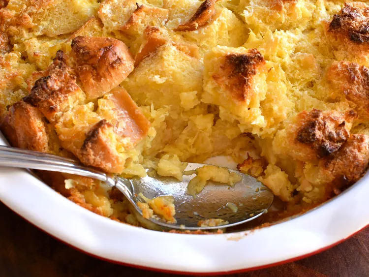

Home
Scalloped Pineapple Souffle

This is a wonderful pineapple dish to be served with ham. It is
a favorite at Easter in my family. The egg whites add a touch
of lightness to it.
Total Time: 50 min | Servings: 12
Ingredients
- 3 eggs, whites and yolks separated
- 1 ½ cups white sugar
- ½ cup butter
- ½ cup milk
- 1 (15 ounce) can crushed pineapple, drained
- 3 cups cubed bread
Directions
- Preheat an oven to 350 degrees F (175 degrees C).
- Beat egg whites until foamy in a large glass or metal
mixing bowl until stiff peaks form. Lift your beater or
whisk straight up: the egg whites should form a sharp
peak that holds its shape.
- Beat the egg yolks, sugar, butter, and milk together in
a large bowl. Stir in the pineapple and bread. Lightly
fold egg whites into the pineapple mixture, then spread
the mixture into a large baking dish.
- Bake in the preheated oven until golden brown, 35 to 45 minutes.
